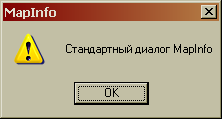
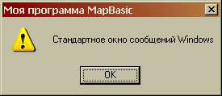
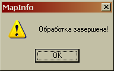
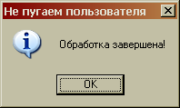
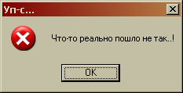
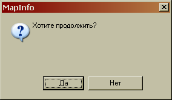
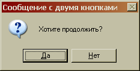

Улучшенные диалоги в MapBasic: простой способ придать лоск приложению
Автор: Nyall Dawson, Senior Analyst at Victoria Police Force © 2012
Перевод: Ciril V. Golubev© 2014
Самый простой способ придать некоторый лоск вашему приложению MapBasic заключается в использовании стандартных диалогов Windows вместо команд Note и Ask. Безусловно, эти команды удобны для организации быстрого взаимодействия с пользователем, но, к сожалению, имеют нулевые настройки диалога.

Стандартный диалог MapBasic Note – ограничен иконкой
восклицательного знака и сообщением "MapInfo" в заголовке
Давайте посмотрим, что можно сделать по этому поводу.
Начнем с подключения ссылки на стандартный диалог Windows, который входит в состав библиотеки User32.dll. Также используем две небольшие оболочки: функцию MessageBox, которая используется для диалогов, возвращающих ответ (замена для функции Ask), и процедуру MsgBox для случаев, когда ответ от пользователя не важен (замена для Note). И, наконец, добавим группу определений DEFINE, которые позволят сделать вызов подпрограмм более удобным и запоминающимся.
Declare Function MsgBoxA Lib "User32.dll" Alias "MessageBoxA" (ByVal hWnd As Integer, ByVal sTxt As String, ByVal sCaption As String, ByVal iTyp As Integer) As Integer Declare Function MsgBox(ByVal sTxt As String, ByVal sCaption As String, ByVal iType As Integer) As Integer Declare Sub MessageBox(ByVal sTxt As String, ByVal sCaption As String, ByVal iType As Integer) ' Кнопки окна сообщений DEFINE vbOKOnly 0 DEFINE vbOKCancel 1 DEFINE vbAbortRetryIgnore 2 DEFINE vbYesNoCancel 3 DEFINE vbYesNo 4 DEFINE vbRetryCancel 5 ' Иконки окна сообщений DEFINE vbCritical 16 DEFINE vbQuestion 32 DEFINE vbExclamation 48 DEFINE vbInformation 64 ' Кнопки окна сообщений по умолчанию DEFINE vbDefaultButton1 0 DEFINE vbDefaultButton2 256 DEFINE vbDefaultButton3 512 DEFINE vbDefaultButton4 768 ' Возвращаемые значения окна сообщений DEFINE vbOK 1 DEFINE vbCancel 2 DEFINE vbAbort 3 DEFINE vbRetry 4 DEFINE vbIgnore 5 DEFINE vbYes 6 DEFINE vbNo 7 '************************************************************************** ' Оболочка для стандартной Win32 функции Msgbox '************************************************************************** Function MsgBox(ByVal sTxt As String, ByVal sCaption As String, ByVal iType As Integer) As Integer MsgBox = MsgBoxA(WindowInfo(WIN_MAPINFO, WIN_INFO_WND), sTxt, sCaption, iType) End Function '************************************************************************** ' Оболочка для окна сообщений, не возвращающего ответа '************************************************************************** Sub MessageBox(ByVal sTxt As String, ByVal sCaption As String, ByVal iType As Integer) Dim i As Integer i = MsgBoxA(WindowInfo(WIN_MAPINFO, WIN_INFO_WND), sTxt, sCaption, iType) End Sub
Теперь, когда всё настроено, можно заменить привычное окно сообщения MapInfo вызовом:
Call MessageBox("Стандартное окно сообщений Windows", "Моя программа MapBasic", vbExclamation)
 Окно сообщений с изменённым заголовком
Как видно выше, MessageBox может быть вызван с заданным текстом сообщения, заголовком диалога и одной или несколькими дополнительными опциями. В приведённом примере использовалась константа vbExclamation, чтобы воспроизвести внешний вид окна Note. Ничего особенно в этом пока что нет, но давайте посмотри дальше. В некоторых случаях (таких, как уведомления пользователя, что операция завершена успешно) значок восклицательного знака попросту неуместен. Сравним:
 Иногда восклицательный знак – не лучший выбор
А вот этот диалог создан со следующими параметрами:
Call MessageBox("Обработка завершена!", "Не пугаем пользователя", vbInformation)
 Намного лучше!
Или наоборот, когда надо сообщить пользователю, что случилось что-то нехорошее:
Call MessageBox("Что-то реально пошло не так..!", "Уп-с…", vbCritical)
 Гарантировано заметят!
Другой способ использовать окно сообщений – через вызов функции MsgBox. Способ применим, когда необходимо получить определённый ответ пользователя, так же, как при вызове MapBasic-функции Ask. Но разница между этими подходами в том, что диалоговое окно Ask заставляет кровоточить глаза:
 MapBasic диалог Ask… что за пустое пространство!?
Давайте заменим ЭТО стандартным окном сообщения Windows:
iResponse = MsgBox("Хотите продолжить?", "Сообщение с двумя кнопками", vbYesNo + vbQuestion + vbDefaultButton1) If iResponse = vbYes Then Пользователь нажал Да ElseIf iResponse = vbNo Then Пользователь нажал Нет End If
Этот код демонстрирует, как объединяются диалоговые атрибуты:
vbYesNo + vbQuestion + vbDefaultButton1
и как значение, возвращённое диалогом, может быть проверено на постоянные vbYes и vbNo для определения реакции пользователя.
Формирование сложных цепочек атрибутов позволяет создавать очень гибкие и удобные для пользователя диалоги. Опять же, конечный результат выглядит гораздо приятнее (и более профессионально), чем встроенная функция MapBasic:
 Используем Message Box, чтобы задать вопрос
Итак, поехали! Такое небольшое изменение для ваших программ на MapBasic позволит сделать их немного более удобным для пользователей.
Оригинал:
"Better Dialogs in MapBasic"